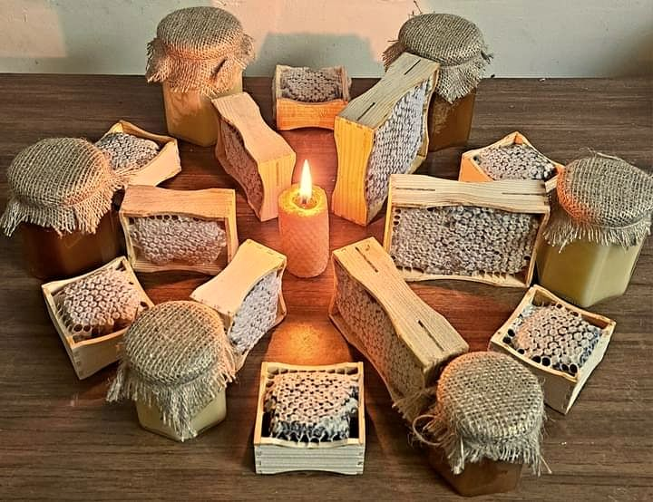

Віск бджоли виділяють самі: з нього вони будують стільники, де зберігають мед і пергу й де виростають личинки. Коли пасічник качає мед, віск лишається, і з нього роблять свічки.
Така свічка пахне воском і трохи медом, а горить зазвичай повільніше за парафінову того ж розміру. Колір природний, від світло-жовтого до золотистого.
Найпростіший спосіб — скрутити аркуш вощини (воскової основи для стільників) навколо гніта. Для складніших форм віск розтоплюють на водяній бані й заливають у форму.
Не залишайте запалену свічку без нагляду, тримайте подалі від дітей і тварин, ставте на негорючу підставку. Розтоплювати віск на відкритому вогні не можна: він займається.
Робочі бджоли виділяють віск залозами на черевці у вигляді крихітних пластинок. За поширеними оцінками, щоб виробити віск, бджолам треба спожити в кілька разів більше меду за його вагу, тому віск для бджіл дорогий. Вони ліплять із нього комірки й запечатують ними мед і пергу.
Бджолиний віск плавиться приблизно за 62–64 °C, тому його легко розтопити на водяній бані, але легко й перегріти. На свічках іноді з’являється білий наліт: це нормально, він не шкодить і зникає, якщо потерти свічку теплими руками чи м’якою тканиною.
Підрізайте гніт приблизно до 5–6 мм перед кожним запалюванням: так свічка горить рівно й не коптить. Ставте її в місці без протягів. Гасіть свічку, а не дмухайте: можна притиснути гніт до воску чи накрити ковпачком.
Віск, що лишається після відкачки, промивають і розтоплюють, проціджують від частинок і залишають застигати. Так отримують чистий віск для свічок. Про те, звідки він береться, є сторінки «Забрус» і «Як ми качаємо мед».
Скручені свічки роблять із аркуша вощини: його накручують на гніт, і за кілька хвилин свічка готова. Литі свічки отримують, заливаючи розтоплений віск у форму з гнітом. Макані роблять, багато разів занурюючи гніт у віск, так що свічка росте шарами. Кожен спосіб дає свою форму й текстуру, а запах воску й меду лишається.
Свічки тримайте в прохолодному місці без прямого сонця: тепло може розм’якшити віск, а світло з часом змінює колір. Від запаху воску свічка не псується, але віск вбирає сторонні запахи, тому обгортайте свічки папером і не тримайте поруч із пахучими речами.
Не ставте свічку на дерево чи пластик без підставки, поруч із завісами й папером. Не запалюйте свічки, які гнуться чи просідають від тепла, і не лишайте запалену свічку в приміщенні, де заснули діти чи тварини.
Чи можна їсти віск?
Віск їстівний, але не засвоюється; свічки їжею не є.
Чому свічка дає білий наліт?
Це нормально для бджолиного воску й не шкодить.
Чи можна розтоплювати віск на відкритому вогні?
Ні: він займається. Лише на водяній бані.